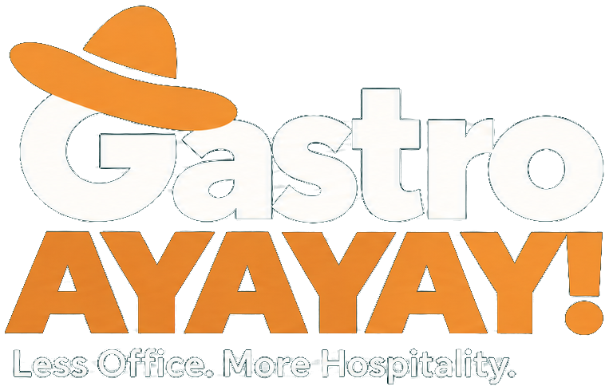

WAS WIR LIEBEN
KOCHEN.
DRINKS.
GÄSTE.
Wenn der erste Bissen überzeugt. Wenn am Tresen ein echtes Gespräch entsteht. Wenn aus einem einmaligen Besuch ein Stammgast wird. Das ist Gastro für uns.
DER GRUND, WARUM WIR HIER SINDLESS OFFICE. MORE HOSPITALITY.
So sehr, dass wir euch den Papierkrieg abnehmen.
Der Laden ist voll. Am Pass geht ein Teller nach dem anderen raus, an der Bar laufen die Bestellungen, im Gastraum liegt dieses Knistern in der Luft. Alle geben Gas. Genau für solche Abende machen wir Gastro. GASTRO AYAYAY! entsteht, damit uns hinter den Kulissen weniger Arbeit von diesem Lebensgefühl trennt.
Aus dem Betrieb. Für den Betrieb. Noch in Entwicklung.

01 / DIE REALITÄT
Eine neue Barkarte schreiben, Aromen ausprobieren, einen Drink wieder und wieder ausmixen, bis er sitzt: Dafür nehmen wir uns gerne Zeit. Dann folgt die Kalkulation. Und mit ihr die Frage, ob aus einer guten Idee auch ein wirtschaftlich guter Drink wird.
Wer heute sauber rechnen will, braucht die aktuellen Händlerkonditionen. Gebindegrößen, Rabatte, neue Preislisten: Die Informationen dafür liegen selten an einem Ort.
Wenn der erste Bissen überzeugt. Wenn am Tresen ein echtes Gespräch entsteht. Wenn aus einem einmaligen Besuch ein Stammgast wird. Das ist Gastro für uns.
DER GRUND, WARUM WIR HIER SINDFür jedes neue Rezept dieselbe Recherche: Lieferantenportal öffnen, Rechnungen durchgehen, Mengen umrechnen, Preise übertragen. Aus der Vorfreude auf die neue Karte wird ein halber Büroabend. AYAYAY!
DER TEIL, DER ZEIT FRISSTWir wollen wissen, was ein Rezept kostet, ohne jedes Mal bei null anzufangen. Einkaufspreise sollen nachvollziehbar sein, Änderungen erkennbar und Kalkulationen endlich so einfach, wie sie sein sollten.
UNSER ANSPRUCHIch habe selbst Gastronomie betrieben und viele Jahre hinter der Bar gestanden. Wenn der Service Fahrt aufnimmt, bin ich mittendrin. Selbst im größten Stress ist da dieses Feuer. Mit einem guten Team einen anspruchsvollen Abend zu meistern, ist für mich bis heute eines der besten Gefühle.
Der Bürotag steht natürlich auch im Kalender. Nur wird er erstaunlich oft auf morgen verschoben. Erst ist im Betrieb etwas los, dann gibt es eine neue Idee, die unbedingt ausprobiert werden muss. Der Stapel auf dem Schreibtisch wird davon nicht kleiner. AYAYAY! ist genau dieses Gefühl: die Liebe zur Gastro als Lebensgefühl und die leichte Panik, wenn man endlich an den Papierkram muss. Daraus ist die Idee entstanden.
David Wilhelm / GründerEin neuer Einkaufspreis betrifft nicht nur den Einkauf. Er verändert Rezepte, Kalkulationen, vielleicht sogar die Karte. Trotzdem liegen diese Informationen oft in getrennten Systemen. GASTRO AYAYAY! soll sie zusammenbringen. Wir beginnen mit dem Kern und erweitern ihn dort, wo es im Alltag wirklich hilft.
Was kostet der Teller wirklich? Was bleibt vom Drink? Mit Zutaten, Rezepten und Einkaufspreisen wollen wir eine Grundlage schaffen, auf die sich Küche und Bar verlassen können.
KALKULATION & ÜBERBLICKEin Beleg landet im Postfach. Künftig sollen solche Informationen dort ankommen, wo sie gebraucht werden: bei den Zutaten, im Einkauf und in der Kalkulation. Menschen prüfen Ausnahmen, statt alles von vorn einzutragen.
BÜRO & ORGANISATIONWenn die Basis steht, denken wir weiter: Kasse, Reservierungen, Veranstaltungen und Planung. Der Traum ist ein Betrieb, dessen Zahlen und Abläufe endlich zusammenpassen.
VERNETZTE GASTRONOMIEDas ist unsere Richtung, noch kein fertiger Funktionsumfang. Wir entwickeln zuerst einen verlässlichen Kern für Küche und Bar. Weitere Bereiche sollen erst folgen, wenn sie fachlich und technisch geprüft sind.
04 / HINTER DEN KULISSEN
Wir kennen das Tempo hinter dem Tresen und am Pass. Genau deshalb reicht uns keine App, die nur in einer Präsentation glänzt. Wir entwickeln, rechnen nach, testen und verbessern. Die erste Version soll im echten Arbeitsalltag bestehen, auch wenn es laut wird und jede Minute zählt.
GEPLANTER RELEASE 04.11.2027
Ein Zieltermin, kein verbindliches Lieferdatum.
Das geplante Releasedatum ist erreicht. Aktuelle Informationen folgen hier.
05 / DAS PILOTPROGRAMM
Ein kleines Café arbeitet anders als eine Hotelküche. Was in einer Bar gut funktioniert, kann im Restaurant zur Bremse werden. Wir möchten zuhören, bevor wir Funktionen bauen, die am Alltag vorbeigehen. Wer mag, begleitet die Entwicklung und testet später frühe Versionen mit uns.
Was würdet ihr am liebsten nie wieder von Hand erledigen? Wo wäre endlich ein bisschen Luft gut? Genau darüber möchten wir sprechen. Die Interessensbekundung und die Teilnahme am Pilotprogramm sind kostenlos. Zeitpunkt und Umfang der Tests besprechen wir persönlich.